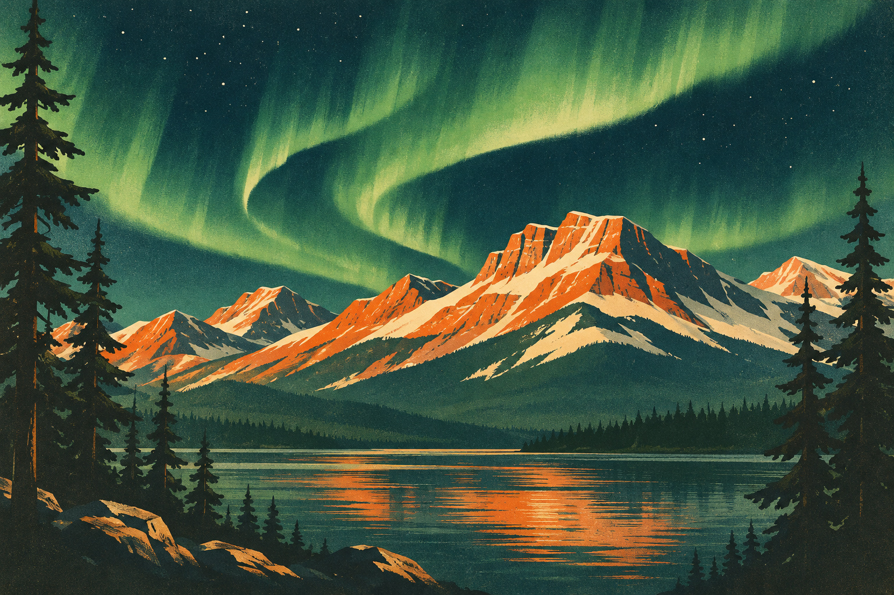
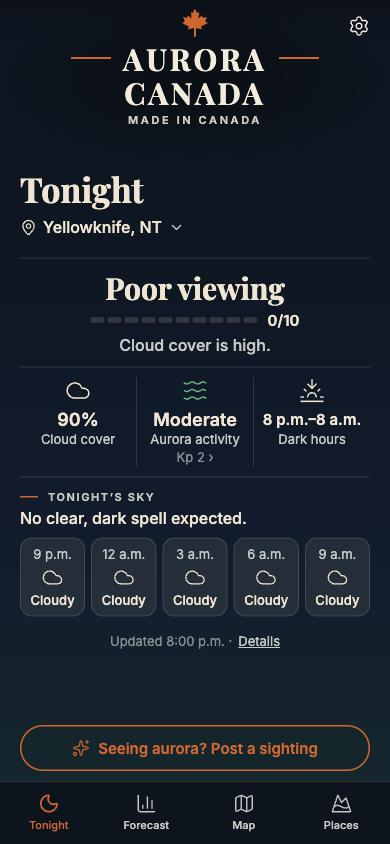

Prévisions d’aurores pour le ciel canadien
Trouvez votre nuit d’aurores boréales.
Activité aurorale, nébulosité et obscurité. Réunies, pour le ciel canadien.
Bientôt sur iPhone
Fait au Canada
Gratuit. Sans publicité. Sans compte.
Ça vaut la peine de sortir?
Une réponse claire pour ce soir, avec sa raison. Pas de graphiques à décoder, pas de jargon de météo spatiale à l’écran principal. Les détails sont à un toucher.
- Activité aurorale pour la prochaine heure, selon le modèle d’aurores de la NOAA
- Nébulosité selon les prévisions d’Environnement et Changement climatique Canada
- Obscurité et clair de lune pour votre lieu et votre fuseau horaire

Ce que vous obtenez
- Prévisions de base gratuites. Les conditions de ce soir pour toute localité canadienne.
- Alertes de base gratuites. Prévues et toujours gratuites. Pas encore offertes.
- Aucune publicité. Jamais. Aucune inscription obligatoire.
- Honnête sur l’incertitude. Un guide, pas une promesse de voir des aurores.
Destinations canadiennes

Yellowknife
Territoires du Nord-Ouest

Whitehorse
Yukon

Churchill
Manitoba
Inuvik
Territoires du Nord-Ouest
Les illustrations sont décoratives et ne montrent pas les conditions actuelles.